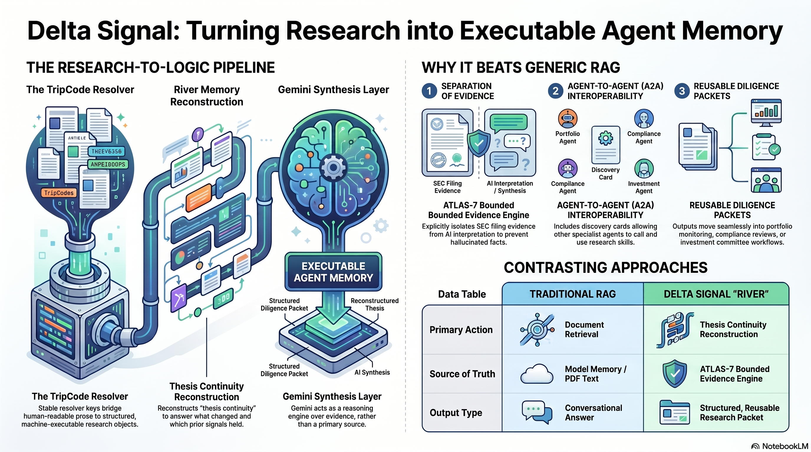
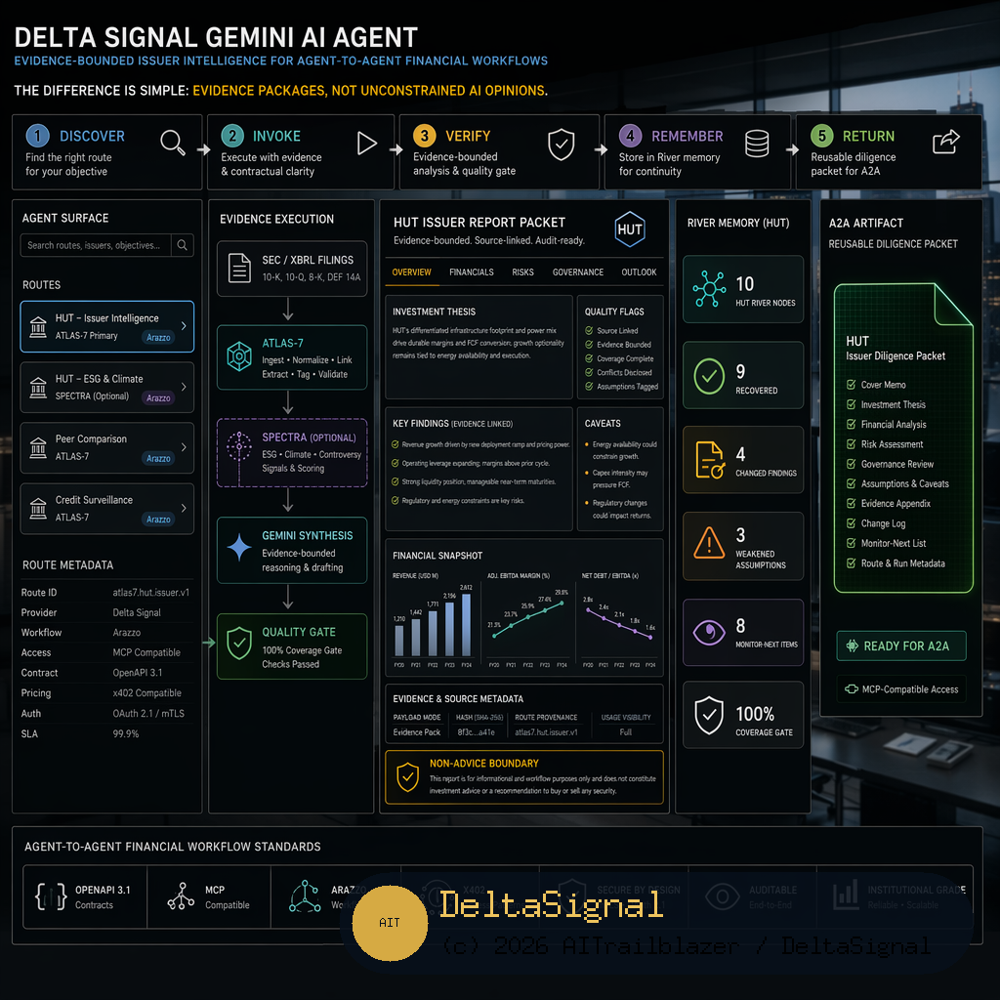

Delta Signal is built for crypto-exposed public-company diligence. It routes to bounded evidence surfaces, then uses Gemini to synthesize what was actually returned.
Best for issuer diligence, portfolio monitoring, compliance review, data-room packets, and subscriber research continuity.
Google for Startups AI Agents Challenge · Track 3 Submission
Delta Signal Gemini AI Agent
Evidence-bounded issuer intelligence for agent-to-agent financial workflows.
Delta Signal turns ticker, TripCode, or issuer requests into reusable SEC/XBRL-grounded diligence packets with ATLAS-7 evidence, Gemini synthesis, source metadata, caveats, session memory, usage visibility, and non-advice boundaries.
Discover → Invoke → Verify → Remember → Return
Demo Video
Two-minute product walkthrough showing Delta Signal functioning as a Cloud Run-hosted agent surface for HUT issuer diligence.
Most AI finance demos stop at a polished answer. Delta Signal exposes source dates, caveats, quality flags, stale fields, missing data, route provenance, and non-advice disclaimers.
Core promise: if evidence is missing, it stays missing.Other agents can discover the service, inspect workflow contracts, call protected tasks, verify returned evidence, preserve memory, and reuse the artifact.
A2A value: specialist issuer intelligence inside an enterprise agent ecosystem.The HUT demo shows a TripCode/River research object becoming a Cloud Run diligence packet with ATLAS-7 evidence, Gemini synthesis, execution trace, session memory, usage metadata, and boundaries.
Demo command: Run a Delta Signal company report for HUT.Proof Cards
Verify discovery, bounded execution, evidence separation, memory, and reuse.
Before execution, another agent can inspect the surface.
Service metadata, Open API-style route contracts, MCP-compatible access, Arazzo workflow planning, readiness boundaries, and API-key protected demo access.
Agents do not have to guess endpoint order.A ticker request becomes a structured diligence task.
company_report ticker: HUT routes toward issuer fundamentals, covenant stress, peer context, alpha signals, SPECTRA field-map evidence where available, source metadata, and caveats.
The workflow is task-bounded, not chat-shaped.The agent calls evidence routes instead of inventing facts.
SEC/XBRL → ATLAS-7 → SPECTRA where available → Gemini synthesis. The evidence layer preserves source dates, caveats, quality flags, hashes where available, payload mode, and route provenance.
Evidence retrieval is separated from language generation.Gemini compresses returned evidence into a readable packet.
The synthesis separates returned evidence, interpretation, missing or stale fields, caveats, quality flags, non-advice language, session/River memory, usage, and execution metadata.
Gemini explains the packet; it does not create new evidence.Research continuity becomes agent-callable state.
HUT context: 10-node River, 9 prior HUT nodes recovered, 4 changed findings, 3 weakened assumptions, and 8 monitor-next items.
Memory supports continuity while SEC/XBRL identifiers remain official evidence anchors.The result can move into downstream workflows.
Designed for portfolio agents, compliance agents, data-room agents, subscriber copilots, analyst dashboards, and internal research systems.
The output is not just prose; it is a reusable research artifact.Protected /a2a returned a completed reusable research artifact.
Step 08 shows another agent can submit a JSON-RPC task, resolve TF-SUB-9DA70A7F98, and receive a completed deltasignal_research_packet with River, evidence, Gemini summary, session memory, cost, runtime, and boundaries.
Open Step 08 ProofThis is the Track 3 invoke-and-return proof.The resolved HUT packet became a post-publication thesis monitor.
Step 09 returned a completed deltasignal_thesis_monitor_baseline with confirmed-signal checks, weakened assumptions, stale or missing evidence checks, invalidation criteria, monitor-next actions, session memory, and usage telemetry.
Open Step 09 ProofThis is the remember-and-monitor proof.The HUT TripCode/River packet powered a subscriber copilot scenario.
Step 10 ran subscriber_tripcode_copilot through /v1/scenarios/run and returned ready_hut_evidence_bound subscriber_research_memory with SEC identity boundaries, next actions, source labels, cost estimate, and non-advice posture.
Open Step 10 ProofThis is the Track 3 scenario and marketplace layer proof.Visual Workflow
The Track 3 product is a callable loop, not a one-off answer.
Agent inspects public service metadata, Open API, MCP, Arazzo workflows, readiness surfaces, and access-policy metadata.
The caller submits a bounded task, such as a HUT issuer diligence request.
Delta Signal calls protected evidence surfaces for SEC/XBRL, ATLAS-7, issuer evidence, and SPECTRA where available.
Gemini converts returned evidence into an analyst-readable diligence packet.
Verifier boundaries check source binding, freshness, missing data, caveats, memory integrity, usage, and non-advice posture.
TripCode/River state preserves research continuity and monitor-next items.
Delta Signal returns a reusable A2A task artifact for downstream agents and humans.
Research To Logic Pipeline
Substack research starts as a human-readable thesis. Delta Signal converts it into a TripCode, River memory, evidence calls, and reusable agent logic.

Delta Signal Gemini AI Agent
The landing page uses the dedicated agent visual as the primary proof layer, while the command-by-command walkthrough stays in START_HERE.html.

Try It
The landing page stays product-focused. The separate guided demo contains the editable commands, request/response audit flow, and recording path.
See Delta Signal move from public discovery to protected evidence execution to Gemini-generated HUT diligence output.
Watch DemoHUT issuer diligence through A2A, ATLAS-7, and evidence-bounded Gemini synthesis.Paste the private demo key and run Health, Agent Card, Resolve, A2A Resolve, Monitor, and Usage from the hosted service.
Open Cloud Run UIThe browser UI exercises the same deployed routes as the terminal demo.Review the discoverable workflow layer, route metadata, MCP-compatible interface, and Arazzo workflow planning materials.
Open Agent SurfaceDiscover before execution. Call only bounded workflows.Open the separate operator page for editable commands, audit capture, replayable request/response evidence, and the recording-ready HUT flow.
Open Guided DemoKept separate from the landing page so the first read stays concise.Open the dedicated diagram page for Devpost and judge review. It includes the public architecture URL plus a direct image URL.
Open Architecture DiagramUse this link in the Devpost Architecture diagram field.Architecture
Each component has one job in the evidence-bounded loop.
Orchestrates and synthesizes evidence-bounded diligence packets into readable output while preserving caveats and non-advice boundaries.
Hosts the agent execution surface and supports the deployed workflow loop.
Issuer evidence layer for crypto-exposed public companies: fundamentals, stress, peer context, alpha signals, readiness, daily changes, and metadata.
Provides filing-backed company facts and issuer evidence anchors.
Adds field-map contracts derived from ATLAS history where available, preserving labels, ranges, dates, caveats, and soft-miss states.
Maintains research continuity, prior thesis state, article memory, issuer River context, deltas, and monitor-next items.
Provide discovery, workflow planning, agent access, route metadata, and protected demo access patterns.
Comparison
The distinction is evidence packaging and reuse.
- Answers from prompt context
- May blur evidence and inference
- Often hides missing fields
- Produces one-off prose
- Hard for another agent to verify or reuse
- Calls bounded evidence routes
- Preserves metadata and caveats
- Surfaces missing or stale evidence
- Returns reusable task packets
- Designed for A2A discovery, invocation, verification, memory, and reuse
Final Message
Delta Signal is a Gemini-powered issuer-intelligence agent for crypto-exposed public companies.
Its core innovation is not just generating a research answer. It turns financial diligence into a production agent loop: discoverable before execution, grounded during execution, verified after synthesis, remembered across research cycles, and reusable by other agents.
Bottom line: Delta Signal produces evidence packages, not unconstrained AI opinions.